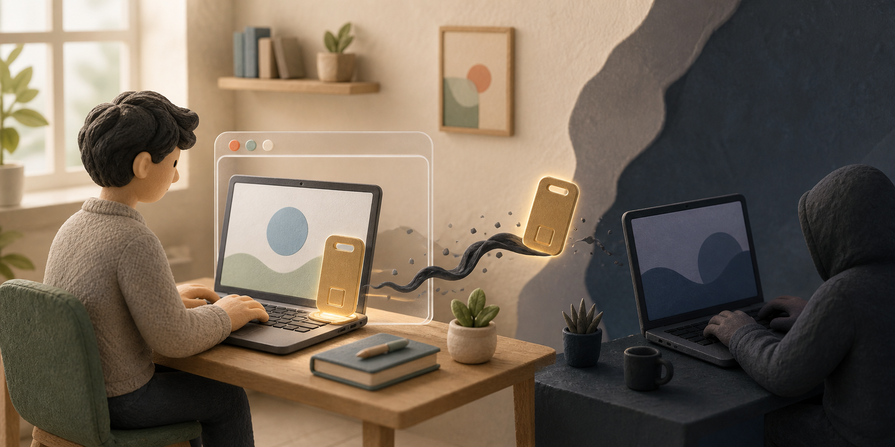

Anthropic 통지: 악성코드가 Claude ‘로그인 상태’를 훔쳐 사용량을 소진했다
Anthropic이 일부 이용자에게 보낸 것으로 공개된 통지 이메일에 따르면, 정보탈취 악성코드가 컴퓨터에서 이미 로그인된 Claude 세션을 복사해 계정 사용량을 소진했다. 회사는 관련 세션을 끊고 저장된 결제수단을 지웠으며, 무단으로 판단한 일부 청구를 환불했다.

피해자가 가장 먼저 알아챈 신호는 낯선 로그인 창이 아니었다. Claude를 사용하지 않았는데도 사용 한도가 다시 찬 직후 빠르게 줄었고, 추가 사용 요금이 붙은 사례도 있었다. 정상적인 고비용 작업이나 표시 오류로도 비슷한 현상이 생길 수 있지만, Anthropic은 일부 계정에서 악성코드가 훔친 로그인 세션을 원인으로 지목했다.
BleepingComputer는 8월 30일 한 피해자가 공개한 통지 이메일과 Reddit 게시물을 토대로 이 사건을 보도했다. 공개된 사례 가운데에는 8월 13일 통지를 받았다는 이용자도 있지만, 공격이 처음 시작된 날짜와 Anthropic이 최초로 탐지한 시점은 공개되지 않았다.
통지 내용은 회사가 피해 계정을 강제로 로그아웃시키고 저장된 결제수단을 제거했다고 설명한다. 이미 결제한 이용 기간은 남지만, 갱신이나 새 구매를 하려면 결제수단을 다시 등록해야 한다. 회사가 무단 사용으로 식별한 추가 청구를 돌려받았다는 사례와 사용 한도를 복구받았다는 사례도 나왔다.
이 조치를 모든 사용자에게 자동 적용되는 환불 약속으로 읽으면 안 된다. Anthropic의 일반 환불 안내는 결제 유형과 지역에 따라 적격성을 따로 판단한다고 설명한다. 알지 못하는 청구가 남아 있다면 Claude 지원과 카드사에 각각 신고해야 한다.
현재 공개된 자료는 Anthropic 서버가 뚫렸다는 증거가 아니다. 피해자 컴퓨터에 먼저 들어온 일반 악성코드가 브라우저에 남아 있던 Claude 로그인 세션을 함께 훔쳤다는 설명이다.
훔친 것은 비밀번호보다 뒤쪽에 있는 열쇠였다
웹사이트는 사용자가 비밀번호와 추가 인증을 통과할 때마다 모든 정보를 다시 묻지 않는다. 대신 “이 사람은 인증을 마쳤다”는 값을 브라우저에 남긴다. 이것이 로그인 세션 또는 세션 쿠키다. 놀이공원 입구에서 신분을 확인한 뒤 손목띠를 채워 주는 것과 비슷하다.
정보탈취 악성코드, 즉 인포스틸러는 그 손목띠를 복사한다. 브라우저에 저장된 비밀번호, 로그인 쿠키, 다른 앱의 자격정보를 한꺼번에 모아 밖으로 보낸다. 공격자는 그중 아직 유효한 Claude 세션을 골라 다른 컴퓨터에서 다시 사용할 수 있다.
세션 탈취의 흐름
비밀번호를 다시 입력하지 않아도 계정이 열릴 수 있다
이미 인증을 마친 세션이 아직 유효할 때 벌어지는 일이다.
- 1컴퓨터 감염악성코드가 브라우저와 로컬 앱의 저장 정보를 읽는다.
- 2세션 복사로그인을 마쳤다는 임시 출입증 값이 밖으로 빠져나간다.
- 3다른 곳에서 재사용세션이 유효하면 새 로그인 확인을 거치지 않을 수 있다.
- 4사용량 소진서비스는 공격자를 로그인된 이용자처럼 받아들일 수 있다.
2단계 인증 자체가 해독된 것 ≠ 인증 뒤에 받은 세션이 복사된 것
MITRE ATT&CK의 세션 쿠키 탈취 설명도 공격자가 유효한 쿠키를 얻으면 비밀번호 없이 이미 인증된 사용자처럼 웹서비스에 접근할 수 있다고 정리한다. 세션이 만료됐거나 서버가 폐기했거나 특정 기기에 묶여 있다면 재사용은 실패할 수 있다. 모든 쿠키가 언제나 열리는 만능 열쇠는 아니다.
이 때문에 “2단계 인증이 깨졌다”는 표현도 정확하지 않다. 공격자는 비밀번호와 인증번호를 새로 풀어낸 것이 아니라, 그 절차가 끝난 뒤 발급된 로그인 상태를 가져갔다. 2단계 인증은 새 로그인을 막는 데 여전히 중요하지만, 이미 빠져나간 세션은 서비스에서 따로 종료해야 한다.
로그아웃은 침입을 끊지만 악성코드는 남는다
Anthropic이 피해 계정의 세션을 끊은 이유는 복사된 출입증을 무효로 만들기 위해서다. Claude의 전체 로그아웃 안내에 따르면 웹의 설정에서 로그아웃하면 브라우저, 모바일 앱, 데스크톱 앱에 남은 세션이 모두 종료된다. Claude Code로 로그인했다면 설정의 Claude Code 항목에서 인증 토큰도 별도로 지울 수 있다.
Claude 웹 세션은 사용하지 않을 때 기본 28일 동안 유지되고, 활동하면 주기적으로 다시 28일로 갱신된다. 편리함을 위한 긴 시간표가 공격자에게도 남을 수 있으므로, 낯선 활동이 보이면 만료를 기다리지 말고 직접 끊는 편이 안전하다.
다만 로그아웃은 Claude 쪽 문만 닫을 뿐 컴퓨터 안의 악성코드를 없애지 않는다. 감염된 컴퓨터에서 곧바로 다시 로그인하면 새로 발급된 세션도 같은 방식으로 빠져나갈 수 있다. 공개된 통지 이메일도 이 점을 가장 강하게 경고했다.
Anthropic이 통지에서 언급한 종류는 Windows의 Vidar, LummaC2, StealC, RedLine, Acreed와 macOS의 Atomic Stealer였다. 이 이름들이 Claude 전용 악성코드라는 뜻은 아니다. 일반적인 정보탈취 도구가 컴퓨터에서 수많은 계정 정보를 모았고, 그 수집물 가운데 Claude 세션이 사용된 것으로 설명됐다.
한 공개 사례에서는 이용자가 불법 복제 게임을 내려받은 뒤 감염을 의심했다. 그러나 이것이 모든 피해자의 감염 경로라는 증거는 없다. 악성 앱, 가짜 설치 파일, 피싱과 브라우저 확장 프로그램 등 다른 경로도 가능하므로, “나는 게임을 내려받지 않았으니 안전하다”고 결론 내릴 수는 없다.
가장 먼저 할 일은 감염된 기기를 멈추는 것이다
의심되는 컴퓨터가 켜져 있다면 먼저 인터넷 연결을 끊는다. 그 컴퓨터에서 새 비밀번호를 입력하거나 다시 로그인하지 않는다. 새 자격정보와 새 세션까지 악성코드가 가져갈 수 있기 때문이다.
다음 단계는 깨끗한 휴대전화나 다른 컴퓨터에서 Claude를 여는 것이다. 설정의 계정 메뉴에서 활성 세션 목록을 보고, 모르는 기기·브라우저·대략적인 위치가 있으면 종료한다. 확신하기 어렵다면 전체 로그아웃으로 모든 세션을 한 번에 끊는다.
Claude에는 현재 전용 비밀번호가 없다. 공식 로그인 안내처럼 Google 계정으로 들어가거나 이메일로 받은 보안 링크를 사용한다. 따라서 Google 로그인을 썼다면 Google 계정의 비밀번호·세션·복구수단을, 이메일 링크를 썼다면 그 메일 계정의 비밀번호·세션·복구수단을 보호해야 한다.
기기 정리는 신뢰할 수 있는 보안 프로그램을 최신 상태로 만든 뒤 전체 검사를 하는 데서 시작한다. Microsoft도 비밀번호를 바꾸기 전에 전체 악성코드 검사를 먼저 하라고 안내한다. 감염이 확인됐거나 완전히 제거됐는지 확신할 수 없다면 중요한 파일을 살펴 백업한 뒤 초기화나 운영체제 재설치를 검토한다.
이 악성코드는 Claude만 골라 가져가는 도구가 아니다. 같은 브라우저에 저장한 다른 사이트의 비밀번호와 세션, 암호화폐 지갑, 개발용 열쇠도 함께 노출됐을 수 있다. 이메일 전달 규칙, 계정 복구 전화번호, 연결 앱, 저장 카드, 개발자용 API 키를 차례로 살펴야 하는 이유다.
마지막으로 Claude 사용량과 청구서를 확인한다. 내가 쓰지 않은 시간에 한도가 줄었는지, 모르는 추가 사용 요금이나 구독 변경이 있는지 본다. 의심 청구가 있으면 화면과 날짜를 남기고 Anthropic 지원에 알리며, 카드 승인까지 일어났다면 카드사에도 즉시 연락한다.
Pro와 Max 요금제는 Claude 채팅과 Claude Code가 같은 사용 한도를 나눠 쓴다. 그래서 브라우저에서 벌어진 세션 오용이 코딩 작업의 남은 한도까지 갑자기 줄어든 것처럼 보일 수 있다. 다만 공식 요금제 안내가 설명하듯 이것은 구독 사용량의 관계이며, 이번 사건에서 개발자용 API 키가 탈취됐다고 확인된 것은 아니다.
의심될 때의 대응 순서
감염 기기를 끊고, 깨끗한 기기에서 계정 문을 닫는다
새 비밀번호를 감염된 컴퓨터에 다시 입력하지 않는 것이 핵심이다.
- 1의심 기기 격리인터넷을 끊고 그 기기에서 새 로그인을 멈춘다.
- 2Claude 세션 종료깨끗한 기기에서 낯선 세션 또는 모든 세션을 끊는다.
- 3로그인 계정 보호Google 또는 이메일 계정과 Claude Code 토큰을 확인한다.
- 4기기·결제 점검전체 검사 뒤 사용량과 카드 청구를 확인하고 신고한다.
감염이 남은 채 다시 로그인하면 새 세션도 다시 빠져나갈 수 있다.
회사 컴퓨터라면 혼자 서둘러 초기화하기 전에 사내 보안 담당자에게 알리는 편이 낫다. 담당자는 낯선 접속 시각과 기기 기록, 회사 계정의 연결 앱과 인증 토큰을 보존한 뒤 계정을 끊을 수 있다. 원인을 찾을 기록까지 먼저 지우면 같은 감염이 다른 직원에게 번졌는지 확인하기 어려워진다.
이번 사건이 아직 말해 주지 않는 것
8월 31일 현재 Anthropic 뉴스룸과 공개 상태 페이지에는 이 사건을 설명하는 회사 차원의 보안 공지가 보이지 않는다. 핵심 근거는 서로 비슷한 문구를 받은 여러 이용자의 통지 이메일과 이를 취재한 보도다. 그러므로 “Anthropic이 전체 피해를 공식 발표했다”고 쓰기보다 “일부 피해 계정에 통지했다”고 표현하는 것이 맞다.
피해 계정 수, 국가, 전체 피해액, 공격자와 공격 기간도 공개되지 않았다. Windows 악성코드 여러 종과 소수의 Mac용 악성코드가 언급됐지만 한국 이용자가 포함됐는지는 알 수 없다. 알림을 받지 않았다는 사실만으로 감염되지 않았다고 단정할 수도 없다.
활성 세션에 표시되는 지역도 단서일 뿐 판결문은 아니다. VPN이나 이동통신망 때문에 내가 쓴 세션이 다른 도시로 보일 수 있고, 공격자가 가까운 중계 서버를 쓰면 낯설지 않은 지역처럼 보일 수도 있다. 기기 종류, 브라우저, 최근 사용 시각과 실제 사용 기록을 함께 비교해야 한다.
공격자가 대화 내용, 프로젝트, 업로드 파일, 연결된 앱까지 실제로 열어봤다는 자료도 아직 없다. 유효한 세션이 있었다면 접근 가능성을 걱정할 이유는 있지만, 공개 자료가 확인한 피해는 계정 접근, 사용량 소진, 일부 부정 청구까지다. 가능성과 확인된 피해를 섞지 않아야 한다.
모든 갑작스러운 사용량 증가가 악성코드 때문인 것도 아니다. 긴 대화, 자동 작업, Claude Code 사용, 표시 지연이나 서비스 오류가 원인일 수 있다. 다만 사용하지 않는 동안 한도가 반복해 차고 비거나 낯선 세션·청구가 함께 보인다면 단순 오류로 기다리기보다 계정 침해 절차를 밟는 편이 낫다.
사건의 경계
확인된 피해와 아직 모르는 범위를 나눠 본다
가능한 위험을 실제 피해처럼 단정하지 않기 위한 구분이다.
공개 자료가 일치하는 범위
- 일부 계정의 로그인 세션 오용
- 사용량 소진과 일부 추가 청구
- 세션 종료와 저장 결제수단 제거
- 일부 무단 청구 환불 사례
아직 모르는 것
- 전체 피해 계정 수와 국가
- 공격 시작일과 전체 피해액
- 대화·파일을 실제로 열람했는지
- 한국 이용자가 포함됐는지
보안 경고 메일 자체를 흉내 낸 피싱도 가능하다. 메일 속 버튼 대신 주소창에 claude.ai를 직접 입력해 세션·사용량·결제를 확인하고, 지원 문의도 공식 도움말에서 시작한다.
지원에 연락할 때는 알림 메일, 사용량 화면, 청구서, 낯선 세션의 기기·위치·최근 사용 시각을 함께 남겨 두면 설명이 빨라진다. 다만 화면을 공유할 때는 로그인 링크, 결제정보, 세션 값, API 키처럼 다시 악용될 수 있는 정보가 보이지 않게 가려야 한다.
AI 구독도 이제 하나의 값비싼 계정이다
AI 계정에는 대화 기록만 있는 것이 아니다. 비싼 사용 한도, 저장 결제수단, 코딩 도구의 인증, 연결된 파일과 업무 서비스가 함께 묶인다. 공격자에게 Claude 세션은 훔쳐 쓸 수 있는 계산 자원이고, 경우에 따라 추가 결제를 일으킬 수 있는 통로가 된다.
이번 사건이 남긴 교훈은 2단계 인증을 포기하라는 것이 아니다. 2단계 인증은 새 로그인을 막고, 활성 세션 관리는 이미 발급된 출입증을 거둬들이며, 악성코드 치료는 새 출입증이 다시 빠져나가지 않게 한다. 세 방어선은 서로 다른 일을 한다.
Claude 사용량이 내가 쓰지 않는 동안 사라진다면 가장 먼저 할 일은 비밀번호 고민이 아니다. 감염이 의심되는 기기를 멈추고, 깨끗한 기기에서 모든 로그인 세션을 끊는 것이다. 이번 사건은 AI 계정 보안도 결국 컴퓨터 안의 작은 ‘로그인 상태’에서 시작된다는 사실을 보여 줬다.
더 읽을 자료
- BleepingComputer — Anthropic의 피해자 통지와 세션 탈취 보도
- Reddit — 8월 13일 통지와 사용량·청구 피해를 공개한 이용자 사례
- Anthropic Help Center — 활성 세션 확인과 개별 종료
- Anthropic Help Center — 모든 기기에서 로그아웃하는 방법
- Anthropic Help Center — Google·이메일 로그인과 Claude 비밀번호 안내
- MITRE ATT&CK — Steal Web Session Cookie
- Microsoft Support — 감염된 계정과 PC를 복구하는 순서
- Claude Status — 공개 사고 기록 JSON